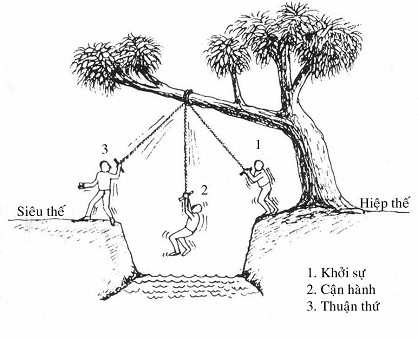

|
Minh Sát Tu Tập ACHAAN NAEB MAHANIRANONDA Tỳ kheo PHÁP THÔNG dịch
PHẦN III KẾT QUẢ
TÓM TẮT 12 XỨ (Các Căn và Ðối Tượng Quán Phù Hợp)
[1]
[2]
--ooOoo-- MƯỜI SÁU TUỆ MINH SÁT (ÑĀṆA) 1) Nāmarūpaparicchedañāṇa - Tuệ Phân Biệt Danh-Sắc Ðây là tuệ, nhờ đó, hành giả nhận ra thực tánh pháp trong sát-na hiện tại (sabhāva dhamma). Sabhāva là thực tánh của Danh (nāma) và Sắc (rūpa). Tuệ này làm thay đổi tà kiến cho rằng nāma - rūpa là "ta". Trí tuệ ở giai đoạn này chưa đủ để cho hành giả nắm bắt sát-na hiện tại, bởi vì tà kiến (phiền não) cho rằng Danh-Sắc là "ta" hay "của ta" đã quá thâm sâu. Người muốn đạt được Tuệ phân biệt Danh-Sắc nầy phải tuân thủ tuyệt đối pháp hành Tứ Niệm Xứ như đã được Ðức Phật trình bày trong Kinh Mahāsatipaṭṭhāna (Ðại Niệm Xứ). Hành giả muốn thành công trong con đường thiền quán cần phải nắm bắt Danh-Sắc trong sát-na hiện tại thường xuyên, với càng nhiều trí tuệ thẩm nghiệm (cinta paññā) càng tốt, cho đến khi chánh niệm tỉnh giác trở thành trí tuệ mạnh mẽ. Lúc ấy, chánh kiến (sammā -- diṭṭhi) sẽ nảy sinh. Trường hợp, khi chánh kiến phát sanh, hành giả sẽ biết, trong sát-na hiện tại, danh nào, sắc nào đang được quán (sắc ngồi, danh nghe,...), và hành giả cũng sẽ nhận ra rằng chính Danh (là cái) biết được đó là sắc ngồi, v.v... Hơn nữa, hành giả cũng sẽ biết rằng, vạn pháp trong thế gian này đều không ngoài Danh và Sắc -- không đàn ông, không đàn bà, không tự ngã hay linh hồn gì cả. Khi tà kiến về tự ngã đã bị diệt trừ, hành giả sẽ cảm thấy vô cùng sợ hãi bởi vì từ trước đến nay, chưa bao giờ hành giả có cảm giác rằng không có "ta" hay "của ta" cả. Nhờ tuệ minh sát (vipassanā paññā) cực mạnh nhổ bật gốc những phiền não (tà kiến) ra khỏi cảm giác của mình, giờ đây hành giả có thể nhận ra thực tánh của Danh và Sắc. Khi đến tuệ này, hành giả sẽ tự mình biết lấy. Cũng giống như việc nếm đường, không cần ai nói cho ta biết vị của đường là như thế nào. Trong Anguttara - Nikāya (Tăng Chi Kinh), Ðức Phật nói Pháp (Dhamma) này là: "Paccattaṃ veditabbo viññuhi" - bậc trí tự mình trực nghiệm. Dhamma (Pháp) không cần một vị thầy phải giải thích cho ta biết rằng ta đã đạt đến mức độ tuệ nào, mà hành giả sẽ tự biết do trực nghiệm cá nhân của mình. Cũng có khi một số hành giả sẽ nghĩ rằng mình đã đạt đến một tuệ nào đó, nhưng không thực sự chắc chắn lắm. Nếu hành giả không chắc chắn thì hành giả có thể vẫn chưa đạt được tuệ ấy. Tuệ này được gọi là Diṭṭhivisuddhi -- Kiến tịnh, bởi vì vào sát-na chứng ngộ sẽ không có phiền não. Tuy nhiên, chánh kiến này vẫn chưa nhận rõ tam tướng (vô thường, khổ, vô ngã), cần phải thực hành thêm để đạt đến đó. Trí tuệ thứ nhất này trở thành nơi "nương nhờ" (quy y) của hành giả, bởi vì nhờ đó, hành giả nhận ra thực tánh pháp. Hành giả biết điều này bằng sự trực nhận Danh-Sắc, cũng như người nếm vị đường vậy. Từ đây về sau, vị ấy biết, "ta không ngồi mà là sắc ngồi", "ta không thấy mà là danh thấy", v.v... Hơn nữa, vị ấy còn biết tất cả các chúng sanh mà vị ấy thấy chỉ là Danh và Sắc. Như vậy, kể từ tuệ thứ nhất này, Danh và Sắc trở thành "Thầy" của hành giả. 2) Paccayapariggahañāṇa - Tuệ Nắm Bắt Duyên Khởi Khi hành giả chứng tuệ thứ nhất, nếu vẫn quán Danh-Sắc trong sát-na hiện tại, hành giả sẽ nhận ra rằng, có rất nhiều Danh và Sắc, song việc quán vẫn không nhầm lẫn hai thứ với nhau. Chẳng hạn, khi sắc ngồi có sự đau nhức và hành giả biết được cái đau ấy, hành giả biết sắc ngồi đang khổ, mà không thấy cái khổ ấy như danh thọ (nāma - vedana). Nhưng bây giờ, hành giả thấy rằng sắc khổ và danh thọ (nāma - vedanā) biết rằng sắc khổ. Bởi thế, ở giai đoạn tuệ này, hành giả thấy được cả danh và sắc cùng hiện hữu do nhân và chúng làm duyên cho nhau. Muốn cho danh hoạt động, phải có sắc ý căn, căn môn và đối tượng (pháp trần). Ngược lại, sắc tuỳ thuộc vào danh để hoạt động -- như đi đứng, di chuyển, v.v... Khi hành giả nhận ra Danh-Sắc trong sát-na hiện tại do nhân duyên mà có, và chúng tuỳ thuộc lẫn nhau như vậy, hành giả biết rằng, danh sắc ấy không phải do Thượng đế hay một quyền năng siêu nhiên nào tạo ra. Danh và sắc trong hiện tại thực sự được tạo ra từ những nhân quá khứ như vô minh (avijjā), tham ái (tanhā), thủ (upadāna), nghiệp (kamma). Và trong hiện tại, chúng cần thức ăn để tiếp tục sống. Khi hành giả, bằng trí tuệ, nhận ra sự thực này trong hiện tại, hành giả sẽ nhận ra nó cũng là vậy trong quá khứ, và chắc chắn sẽ là vậy trong tương lai. Tuệ tri ta được sanh ra theo cách này trong hiện tại (tức được tạo ra từ những nhân vừa kể), lúc này hành giả không còn hoài nghi gì về điều mình đã được tạo ra theo cách này trong quá khứ, và rồi chắc chắn sẽ được tạo ra theo cách này trong tương lai. Trong Thất Tịnh (Bảy bước thanh tịnh), Tuệ thứ hai này được gọi là Kankhāvitaraṇa visuddhi -- Ðoạn nghi thanh tịnh, hay Thoát ly hoài nghi thanh tịnh. Ở Tuệ này, hành giả cảm thấy thoải mái, bởi vì chắc chắn hành giả sẽ được tái sanh vào thiện thú (sugati) sau khi chết. Người chứng được Tuệ này được gọi là Tiểu Nhập Lưu (Culla Sotapanna). 3) Sammasanañaṇa - Tuệ Thẩm Sát Tam Tướng Ở Tuệ trước, Tuệ nắm bắt duyên khởi, hành giả chỉ nhận ra nhân (sanh) của Danh và Sắc, chứ chưa thấy sự diệt của nó, bởi vì sự nối tiếp quá nhanh của Danh-Sắc. Vào giai đoạn này, Tuệ của hành giả vẫn còn yếu. Nếu hành giả tiếp tục tiến hành để thấy danh sắc thường xuyên trong sát-na hiện tại, chẳng bao lâu, hành giả sẽ thấy sự diệt của Danh-Sắc. Tuy nhiên, trí tuệ này vẫn chưa đủ mạnh để thấy sự tách bạch của tính tương tục (santati). Chẳng hạn, khi đang ngồi, và chuyển sang đứng, hành giả sẽ thấy sự diệt ở oai nghi cũ (ngồi). Song khi hành giả đang ngồi trong sát-na hiện tại, hành giả không thấy được sự sanh và diệt của nó bởi vì trí tuệ vẫn chưa đủ mạnh. Tuy nhiên, hành giả vẫn có thể nhận ra ba đặc tính (tam tướng: vô thường, khổ, vô ngã) trong Danh và Sắc. Ðây vẫn chưa phải là sát-na hiện tại thực sự mà chỉ phát sanh ở tuệ thứ tư. Visuḍḍhi Magga (Thanh Tịnh Ðạo) gọi giai đoạn này là Tīraṇapariññaø - Thẩm Ðạt Tri. Còn trong Thất Tịnh thì định danh tuệ này là Maggāmaggañāṇadassanavisuḍḍhi - Ðạo Phi Ðạo Tri Kiến Tịnh. Như vậy, tuệ này đã đưa hành giả vào con đường chân chánh, nghĩa là, đến được tuệ kế tiếp. 4) Udayabbayañāṇa - Sanh Diệt Tuệ Ðây là trí tuệ nhận ra sự sanh và diệt của Danh-Sắc, và tính tương tục - santati (ảo tưởng về một sự liên tục của thân tâm) -- giờ đây được thấy như là những trạng thái của Danh và Sắc, chúng thực sự tách biệt trong sát-na hiện tại của sự minh sát (vipassanā). Ở giai đoạn Tuệ này, hành giả thấy Danh và Sắc sanh diệt cùng một lần. Thực ra, theo Ðức Phật, Danh sanh và diệt nhanh hơn Sắc gấp 17 lần, nhưng sự quán sát của hành giả không đủ nhanh để thấy được điều này. Hành giả thấy cả hai (nāma và rūpa) sanh và diệt cùng nhau. Tuệ này cho phép hành giả thấy rõ tam tướng trong Danh-Sắc, và nó có thể tẩy trừ phiền não ngủ ngầm trong tâm (nāma), đó là ái (taṇhā), ngã mạn (ảo tưởng về tự ngã), kiến (diṭṭhi), và các điên đảo tưởng (vipallāsa). Sanh Diệt Tuệ còn cho hành giả biết là mình có đang theo đúng đạo lộ hay không. Nếu đạo lộ chân chánh, nó sẽ dẫn đến Niết bàn. Trí hiểu biết về chánh đạo này gọi là tuệ minh sát. Nếu đạo lộ không đúng thì đó là những phiền não của tuệ -- có mười tuỳ phiền não loại này, từ Pāli gọi là Vipassanūpakkilesa (Tùy phiền não trong thiền minh sát -- xem chi tiết ở những đoạn sau). Nếu các tuỳ phiền não có mặt, điều đó có nghĩa sự thanh tịnh của hành giả không đủ để phát hiện ra chúng, bởi vì phiền não (kilesa) rất sâu kín và trí tuệ yếu thì khó có thể khám phá ra nó. Phiền não phát sanh ở đây là do có quá nhiều định, chính định này kéo hành giả ra khỏi tuệ minh sát, làm cho hành giả lầm chấp vào những hiện tượng khác mà cứ ngỡ đó là Niết bàn. Các hiện tượng này bao gồm hào quang sáng chói, hỷ lạc và sự an tịnh cực mạnh. Hành giả nào đã từng hành thiền định trong quá khứ và đã phát triển được định này sẽ thấy rằng, nếu định tâm xảy ra thường xuyên, nó sẽ là một chướng ngại lớn cho tuệ minh sát. Tín (saddhā) và tinh tấn quá nhiều cũng có thể là một chướng ngại. Mười tùy phiền não này có thể rất quyến rũ, vì vậy mà hành giả thường bị kéo vào trong các cảnh ấy và nghĩ rằng đó là Niết bàn, thậm chí còn không tin lời của vị thiền sư khi họ giải thích. Nếu hành giả không thể thoát khỏi các tuỳ phiền não này, hành giả không thể tiếp tục đi lên những tầng Tuệ cao hơn được . Ðạo tri kiến tịnh (Paṭipadāñāṇadas-sanavisuḍḍhi) hay Thanh tịnh tri kiến liên quan đến đạo lộ chân chánh. Ðạo tri kiến tịnh này nảy sanh trong Tuệ thứ tư, nếu như pháp hành đúng. Sở dĩ tuệ này được gọi là Ðạo tri kiến tịnh vì đó là con đường đúng đắn không lẫn phiền não, tham ái và si mê. Cả ba đặc tánh hay Tam tướng [1] đều được thấy rõ trong tuệ sanh diệt này, vì thế nó rất là quan trọng. Trí tuệ càng mạnh thì phiền não càng bị trừ diệt nhiều hơn. Khi việc quán sát Sắc trở nên rõ ràng, hành giả cũng sẽ tự thấy Danh. Các tuỳ phiền não trong minh sát (vipassa-nūpakkilesa), như đã đề cập ở trước, có mười: Hào quang (obhāsa). Khi hành giả thấy ánh sáng phát ra quanh mình, hành giả có thể nghĩ rằng mình đã đạt đến Niết bàn, do đó cảm thấy thoả mãn với cảm giác này, làm cho ái phát sanh. Ðây là tà kiến, chính tự ngã của hành giả đã nghĩ như vậy. Trí tuệ (ñāṇa). Một số hành giả phát sanh trí tuệ nhạy bén thấu rõ pháp học và nghĩ mãi đến nó. Sự kiện này sẽ kéo hành giả ra khỏi sát-na hiện tại. Hỷ (pīti). Do hành giả có quá nhiều định (samàdhi) nên cảm giác hỷ lạc phát sanh, và đây là một loại phiền não. Khi hành thiền minh sát, hành giả không thể có hỷ, bởi vì việc quán tam tướng không dẫn đến thọ hỷ. An tịnh (passaddhi). Có lúc, một trạng thái rất an lạc sẽ phát sanh, trạng thái này cũng phát xuất từ việc có quá nhiều định. Tam tướng không thể được chứng ngộ với an tịnh, và dĩ nhiên trí tuệ cũng không thể phát triển từ trạng thái ấy. Lạc (sukha). Thọ lạc cũng là do có quá nhiều định. Khi lạc sanh, hành giả không thể thấy khổ (dukkha). Quyết tín (adhimokkha -- saddhā). Ðức tin kiên quyết này khiến hành giả nghĩ rằng mình đã thấy Niết bàn, và thường không tin ngay cả vị thiền sư là thầy của mình, khi vị này giải thích (ngược lại với những gì hành giả nghĩ là đúng). Sự kiện này phát sanh do có quá nhiều đức tin và ít trí tuệ (thông thường thì tín và tuệ phải được quân bình). Tinh cần (paggaha). Tinh tấn thái quá có thể làm cho hành giả mệt mỏi, tâm không trong sáng và dễ bị phóng tâm. Thường thường, tinh tấn và định phải được quân bình. Quá nhiều tinh tấn dẫn đến phóng tâm; trong khi định thái quá thì khiến hành giả ngưng hành (quán). Niệm (upaṭṭhāna). Niệm thái quá có thể đưa đến định thái quá và hành giả sẽ thấy các ấn chứng (nimitta, các tướng xuất hiện trước mắt hành giả). Khi đó, đối tượng Danh-Sắc sẽ mất, tức là hành giả không còn trong sát-na hiện tại, do đó không thể tiếp tục quán sát được nữa. Xả (upekkhā). Có khi xả phát sanh và hành giả tưởng lầm mình không còn phiền não nữa -- nghĩa là các phiền não đã bị Niết bàn tẩy trừ -- mà thực ra, phiền não vẫn còn nguyên; tham, sân, si chỉ tạm thời vắng mặt. Ở giai đoạn này, hành giả không thể tiếp tục việc thực hành của mình được cho đến khi nhận ra các tuỳ phiền não này. Dục cầu (nikanti). Hành giả cảm thấy vui thích với các tuỳ phiền não trên và thoả mãn khi duy trì được nó. Do đó, hành giả không thể tiếp tục việc thực hành của mình. Vipassanūpakkilesa là phiền não của thiền minh sát, chúng nảy sanh vì định thái quá. Những tuỳ phiền não này cho hành giả quan kiến sai lầm rằng mình đã đạt đến trạng thái không còn phiền não hay đạt đến Niết bàn. Chính do cảm giác này mà hành giả nghĩ "Ta" đã đạt đến Niết bàn, và dĩ nhiên cảm giác ấy là bất tịnh, bởi vì nó được nảy sinh từ sự thực hành với một cái "Ta" ở trong tâm. (Ðây không phải là vipassanā, bởi vì vipassanā không thực hành với một cái "Ta"). Cảm giác này rất tốt đối với thiền chỉ, nhưng không có lợi cho thiền minh sát (vipassanā). Thiền chỉ đòi hỏi phải có định tâm mạnh, bởi vì thiền chỉ cần phát triển các ấn chứng (nimitta), nhưng thiền minh sát lại không. Các tuỳ phiền não này sẽ không phát sanh ở ba loại hành giả: - Hành giả nào không hành Vipassanā đúng cách. Trong trường hợp này, các phiền não cũng khởi lên nhưng không gọi là những phiền não của thiền tuệ hay tuỳ phiền não được . - Hành giả nào tinh tấn yếu. Do yếu tinh tấn, định sẽ không phát sanh. - Hành giả đã là bậc Thánh (Ariya) và biết đạo lộ chân chánh. Khi hành giả loại trừ được các tuỳ phiền não, không mấy chốc, hành giả sẽ thấy sự sanh và diệt của Danh và Sắc thật rõ ràng. Trong Thất Tịnh thì Tuệ thứ tư này cho đến Tuệ thứ mười một (Anuloma: Thuận Thứ Tuệ) được gọi là Paṭipadāñāṇadassanavisuḍḍhi -- Ðạo Tri Kiến Tịnh. 5) Bhangañāṇa - Hoại Diệt Tuệ Tuệ nầy là tuệ chỉ thấy khía cạnh diệt của Danh và Sắc. Hành giả thấy sự phân tán của năm uẩn cả bên trong (tâm) lẫn bên ngoài (đối tượng). Chẳng hạn, hành giả thấy sắc ngồi diệt và cũng thấy luôn danh biết sắc ngồi diệt nữa. Hiện tượng này, điều mà hành giả chưa từng thấy trước đây, tạo ra một cảm giác kinh hoàng và sợ hãi nơi hành giả. Tuệ này đủ mạnh để nhổ bật gốc si mê (moha) với tinh tấn, chánh niệm, tỉnh giác. Cảm giác về sự diệt mạnh đến nỗi hành giả chỉ tập trung vào đó mà không chú ý đến khía cạnh sanh (của Danh và Sắc). Tuệ thấy sự hoại diệt của Danh-Sắc này có một ảnh hưởng đáng sợ trên hành giả bởi vì hành giả nhận ra rằng, các pháp trên thế gian này là không có thực thể, chúng có đó rồi lại không. Khi đạt được Hoại Diệt Tuệ này, hành giả sẽ tiêu diệt được điên đảo tưởng (vipallāsa) -- tưởng rằng thân và tâm này là thường (nicca -- vipallāsa). Khi đắc Tuệ này, hành giả cũng sẽ cảm nhận được rằng đâu là pháp hành đúng, và không muốn hành những pháp hành bất chánh khác nữa. Tuệ này là bước đầu tiên của sự trừ diệt phiền não (tức mở đầu của giai đoạn Pahānapariññā -- Trừ Ðạt Tri -- từ Tuệ thứ 5 cho đến Tuệ 14 (Ðạo Tuệ, Maggañāṇa). Các phiền não mà hành giả đã từng đa mang qua bao cuộc du hành trong vòng sanh tử luân hồi (samsāra vatta) giờ đây bắt đầu bị bứng gốc. Tuệ này đem lại 8 lợi ích: - Hành giả nhận ra rằng không có lạc thực sự trong bất kỳ một sanh hữu tương lai nào. - Trong kiếp hiện tại này, hành giả cũng không thấy có lạc, bởi vì hành giả đã nhận ra tính khổ não của cuộc đời. - Hành giả phát triển một ước muốn mãnh liệt -- muốn đoạn tận khổ. - Nếu là một tu sĩ, Tuệ này sẽ dẫn hành giả đến chỗ ước muốn có một cuộc sống tri túc với những vật dụng giản đơn. - Nó cũng làm cho vị tu sĩ có một nguyện vọng tha thiết: sống tuân thủ giới luật. - Hành giả đã đạt đến Tuệ này thì không thể nào phá giới. - Ðối với những nhu cầu của cuộc sống, hành giả dễ chấp nhận với những gì đã có, nếu có bị khiêu khích cũng không dễ nóng giận, biết kham nhẫn độ lượng với những phiền não của người khác. - Không cảm thấy phiền muộn bởi những náo động bên ngoài, chẳng hạn như tiếng ồn, v.v... 6) Bhayatupaṭṭhānañāṇa - Kinh Úy Tuệ Ở Tuệ này, trí tuệ nhận ra rằng Danh-Sắc quả thật là nguy hại. Ở Tuệ trước, hành giả đã nhận ra khía cạnh tan hoại của nó, cảm giác được tính không thực thể của Danh-Sắc, chúng sanh và diệt quá nhanh. Chính điều này khiến hành giả kinh hoàng và sợ hãi. Hành giả không phải chỉ thấy không có lạc ở danh sắc hiện tại mà ngay cả tái sanh vào bất kỳ một sanh hữu nào trong tương lai cũng là điều đáng sợ, như nó đã từng trong quá khứ vậy. Tuệ thứ sáu này khiến cho tham ái dừng lại, song chưa hoàn toàn tẩy trừ nó. Kinh Úy Tuệ được xem là đối trị của ái (tanhā), mặc dù vậy, nó cũng như xức thuốc lên chỗ ngứa. Khi thuốc tan, thì da ngứa trở lại. 7) Ādīnavānupassanāñāṇa - Quá Hoạn Tuệ Khi hành giả đã chứng Tuệ thứ sáu (Kinh Úy Tuệ), việc hành thiền tiếp tục sẽ tự động dẫn đến Tuệ thứ bảy này -- tuệ thấy Danh-Sắc như cội nguồn của hiểm họa và nguy hại. Từ Tuệ thứ nhất đến Tuệ thứ bảy này, mỗi tuệ làm duyên cho tuệ kế tiếp, và mỗi lần như vậy, tuệ giác lại càng mạnh hơn. Hành giả tuệ tri danh sắc như là mối hiểm họa, và cảm thấy rằng tốt hơn hết là không có Danh-Sắc. Năm nguy hại mà hành giả nhận ra là: 1. Danh-Sắc trong tam giới (dục giới, sắc giới, vô sắc giới) hiện ra như thể chúng nằm trong hầm lửa. 2. Tuệ tri rằng Danh-Sắc dù trong sanh hữu nào cũng bị bao vây bởi 11 ngọn lửa. Ðó là: sanh, già, chết, sầu, bi,... (xem lại 11 loại khổ). Hành giả cảm thấy rằng Danh-Sắc quả thật nguy hiểm, tai họa và là cội nguồn của khổ đau. 3. Tuệ tri nhân sanh Danh-Sắc là vô minh (avijja), và vô minh ấy chính là mối nguy hại vì nó dẫn đến sanh, lão, bệnh, tử. 4. Tuệ tri rằng Danh-Sắc đang lão suy và tan rã trong từng sát-na, và đây là sự nguy hại. 5. Tuệ tri rằng phải sanh lại trong vòng luân hồi là điều nguy hại, là mối hiểm nguy, bởi vì Danh-Sắc là cội nguồn của đau khổ, dù sanh hữu nào cũng vậy, nó chỉ có thể dẫn đến đau khổ thêm nữa mà thôi. Khi năm điều nguy hại này đã được nhận ra thì những lợi ích từ sự kiện này cũng được nhận ra. Hành giả thấy rằng: - Không còn tái sanh là lạc, và rằng ở đâu không có Danh-Sắc thì ở đó là nơi đáng mong cầu. - Nếu không còn tái sanh trong bất kỳ sanh hữu nào, chắc chắn sẽ an lạc, và chính điều này dẫn đến Niết bàn. - Nếu không còn nhân sanh (samudaya) Danh-Sắc, chắc chắn sẽ có sự giải thoát khỏi khổ. - Nơi nào không có Danh-Sắc biến hoại, nơi đó là nơi an lạc (Niết bàn). - Không còn phải chịu tái sanh trong vòng luân hồi là phúc lạc và cội nguồn của hạnh phúc. Ở Tuệ này, hành giả nhận ra rằng Danh-Sắc hay ngũ uẩn là thực tánh (sabhāva) của Pháp, và thực tánh ấy chính là trạng thái gây ra nguy hại. Tuệ này có một năng lực rất mạnh ngăn được tham ái, không cho tạo ra điên đảo tưởng ở trong tâm. Trí tuệ ở Tuệ này là đối trị của tham ái, nó làm cho tham ái khó bề hoạt động. Nói chung, tham ái lúc này không có chỗ trú ngụ trong các cảm thọ vì toàn thế gian (năm uẩn) lúc này được thấy như mối hiểm họa, nguy hại và không có lạc. Ở giai đoạn này, hành giả không còn thấy niệm (sati) là thiện, mà đơn thuần chỉ là một điều gì đó mang dấu ấn của tam tướng. Tuy nhiên, niệm vẫn cứ tiếp tục làm nhiệm vụ của nó. Ngay cả trí tuệ (paññā) lúc này cũng được thấy mà không còn cảm giác ưa hay ghét trong đó. Sở dĩ có sự kiện này bởi tham ái và tà kiến không còn để có thể khiến hành giả phải ưa thích niệm và tuệ vậy. Tâm nào sắp đạt đến Niết bàn cũng cần phải tiếp tục thực hành cho đến khi đạt được cảm giác này (tức cảm giác tham ái là kẻ thù). Lúc ấy, tâm sẽ tách ra khỏi vòng luân hồi và đi vào đạo lộ Niết bàn. Ngược lại, nếu hành giả nghĩ rằng Danh-Sắc là tịnh, là thường, là lạc, lúc ấy tâm không thể tách ra khỏi vòng luân hồi, không thể tiếp tục để đạt đến Niết bàn đoạn tận khổ đau. Tâm phải nhận ra khổ (dukkha), và tuệ chứng tri khổ này sẽ đưa hành giả đến Niết bàn. Niết bàn không thể chứng ngộ bằng tâm định (samādhi), bởi vì định làm phát sanh điên đảo tưởng cho rằng năm uẩn là lạc (sukhavipallāsa) và hành giả không thể nhận ra sự thực rằng Danh-Sắc là hiểm họa. 8) Nibbidānupassanāñāṇa - Yếm Ly Tuệ Qua mỗi cấp độ Tuệ, trí tuệ càng trở nên mạnh mẽ hơn. Ðến Tuệ thứ tám này, một cảm giác yếm ly hay nhàm chán khởi lên đối với Danh-Sắc (năm uẩn), do kết quả của Tuệ trước (Quá Hoạn Tuệ). Trong sự nhàm chán này, không có tâm sân, mà chỉ có trí tuệ. Từ đó dẫn hành giả đến ước vọng không muốn tái sanh lại nữa, dù trong bất kỳ sanh hữu nào, ngay cả ở địa vị cao cả nhất như vua chúa hay đại phú gia cũng vậy. Cũng giống như một người đứng trước hai con đường: hắc lộ là con đường đưa đến tái sanh trong vòng luân hồi và bạch lộ là con đường giải thoát của Niết bàn. Do có sự yếm ly đối với Danh-Sắc nên hành giả không thấy có lạc trong hắc lộ, và bạch lộ dẫn đến Niết bàn lôi cuốn hơn. Tuệ Yếm Ly này xuất phát từ việc thoát ly khỏi tham ái. Nếu sự thoát ly tham ái được hoàn tất, nó được gọi là Virāga (ly tham). Từ ly tham, dẫn đến giải thoát (vimutti). Giải thoát dẫn đến Niết bàn. Hành giả đạt đến Yếm Ly Tuệ ít nhất cũng chứng tri một trong ba đặc tánh của Tam Tướng. Nếu trong sự yếm ly ấy cảm thấy có sân (dosa) thì đó không phải là Nibbidā -ñāṇa (Yếm Ly Tuệ), bởi vì loại yếm ly này không thể thấy ba đặc tánh vậy. Người thực hành vipassanā mong tầm cầu sự giải thoát khỏi luân hồi, nếu đạt đến Tuệ này, mọi phiền não, dù có mạnh đến đâu, cũng sẽ được làm cho muội lược và thoát ly. Từ Tuệ này, lộ trình tâm (vithī-citta) [2] bắt đầu dẫn vào con đường Niết bàn. Cảm giác nhàm chán ở Tuệ này được cô đọng trong bài kệ Pháp Cú sau:
9) Muñcitukamyatāñāṇa - Dục Thoát Tuệ Sau khi đã nhận ra sự nguy hiểm và tai hoạ của Danh-Sắc ở Tuệ thứ bảy, và yếm ly ở Tuệ thứ tám, giờ đây hành giả ước muốn mãnh liệt - giải thoát khỏi Danh-Sắc (Dục Thoát Tuệ). Cũng như người bị nhốt trong tù, lúc nào cũng mong thoát khỏi chỗ đó vậy. Các Tuệ thứ sáu, thứ bảy và thứ tám có liên quan với nhau, mỗi cấp độ mỗi mạnh hơn trước. Kinh Uý Tuệ (6) dẫn đến Quá Hoạn Tuệ (7), Quá Hoạn Tuệ dẫn đến Yếm Ly Tuệ (8). Từ Tuệ thứ chín (Dục Thoát Tuệ) này sẽ dẫn lối vào Niết bàn. Chính ước muốn giải thoát đó thúc đẩy hành giả tinh tấn hơn nữa trong pháp hành để chứng ngộ Niết bàn. 10) Paṭisankhānupassanāñāṇa - Giản Trạch Tuệ Trong các Tuệ trước, sự kinh sợ, nguy hại và yếm ly dẫn đến ước muốn giải thoát khỏi Danh-Sắc (Tuệ thứ chín). Ở Tuệ này, được thúc đẩy bởi ước muốn thoát khỏi Danh-Sắc, hành giả [3] cố gắng tìm cách thoát ly, nhưng vẫn chưa biết phải làm thế nào. Khi vừa nhận ra tam tướng trong Danh-Sắc thì cảm giác thoát ly khỏi nó khởi lên mạnh mẽ hơn. Nguyên nhân làm phát sanh ước muốn giải thoát là từ Tuệ thứ bảy, thứ tám và thứ chín. Cả ba Tuệ hợp lại tạo ra một tuệ giác rất mạnh và trong sáng. Chính trí tuệ này ước muốn đoạn trừ phiền não và cố gắng tìm phương cách giải thoát: con đường đi đến chỗ đoạn tận vòng luân hồi (samsāravata) -- mà dường như cái vòng này là bất tận. Ở Tuệ này, hành giả thấy tam tướng thường xuyên hơn ở các Tuệ trước. Khi đã thấy rằng Danh-Sắc là vô thường, khổ, vô ngã, ước muốn đoạn tận khổ sẽ khởi lên mạnh mẽ hơn. (Ðức Phật nói rằng chỉ có tuệ tri Tam Tướng mới có thể thoát khổ. Người hành thiền khi chưa thấy được Tam Tướng thì không thể nào thoát khỏi luân hồi. Chỉ một con đường độc nhất đưa đến Niết bàn -- phải thấy Danh-Sắc như Vô Thường -- Khổ -- Vô Ngã). 11) Sankhārupekkhāñāṇa - Xả Hành Tuệ Trí tuệ này khiến tâm thản nhiên đối với Danh-Sắc (sankhàra hay thân hành và ý hành) phát triển, không còn chấp thủ hay luyến ái đối với Danh-Sắc mà từ lâu chúng ta vẫn nghĩ nó như là "ta", "của ta", "tự ngã của ta" nữa. Tuy nhiên, sự thản nhiên (xả) này được kết hợp với tâm yếm ly. Hành Xả Tuệ, được phát triển từ Tuệ trước, có năng lực rất mạnh và chính nó thấy rõ được rằng Năm Uẩn (Sankhāra) là vô ngã -- không phải đàn ông, đàn bà, người hay thú gì cả -- và cũng thấy rằng sự sống đang rút ngắn lại, không sớm thì muộn con người cũng phải chết, hoàn toàn không có lạc trong Danh-Sắc. Khi tâm với trí tuệ nhận ra Danh-Sắc là Không (Suññata), nó không còn quan tâm đến Danh-Sắc nữa, mà chỉ thấy thế gian là rỗng không. Bởi lẽ đó mới gọi là tâm có xả -- không ghét cũng không ưa đối với Danh và Sắc, mà thản nhiên với sự yếm ly. Giờ đây tâm muốn đạt đến Niết bàn, nó không màng đến Danh và Sắc nữa. Tuệ ở cấp độ này là trí tuệ minh sát (vipassanā) cao nhất trong hiệp thế. Nó sẽ đưa hành giả đến Tâm Ðạo (Magga Citta) và Tâm Quả (Phala Citta), hành giả sẽ trở thành một vị Thánh (Ariyapuggala). Ðó là trí tuệ cực mạnh và có thể loại trừ phần lớn các phiền não bởi vì nó thấy Tam Tướng rất rõ. Tuệ này sẽ dẫn đến ước muốn (chanda) chứng đắc Niết bàn. Tuệ thứ chín (Dục Thoát Tuệ), Tuệ thứ mười (Giản Trạch Tuệ) và Tuệ thứ mười một (Xả Hành Tuệ) có liên quan với nhau, nhưng tuệ giác ở giai đoạn này vẫn mạnh hơn. Tâm có xả với bất kỳ một trong ba đặc tánh nào cũng vậy, được gọi là tâm giải thoát. Nếu tâm được giải thoát và hướng đến Niết bàn bằng Vô thường tuỳ quán (Aniccānupassanā), thì được gọi là Vô Tướng Niết bàn (Animitta-nibbāna). Nếu tâm được giải thoát và hướng đến Niết bàn bằng Khổ tuỳ quán (Dukkhanupassanā), thì được gọi là Vô Nguyện Niết bàn (Appaṇihita-nibbāna) Nếu tâm được giải thoát và hướng đến Niết bàn bằng Vô ngã tuỳ quán (Anattānupassanā), thì được gọi là Không Tánh Niết bàn (Suññata-nibbāna). 12) Anulomañāṇa - Thuận Thứ Tuệ Tuệ này giúp hành giả chứng ngộ Tứ Thánh Ðế vì đó là một loại trí tuệ viên mãn. Trí tuệ này phát xuất từ cấp độ tuệ trước, nhưng tín, tấn, niệm và tuệ mạnh hơn -- bởi vì nó đã chứng ngộ Khổ Ðế (Dukkhasacca) và Tập Ðế (Samudayasacca). Nếu nói dưới dạng 37 Pháp Trợ Giác Ngộ (Bodhipakkhiyadhamma), thì Tuệ này viên mãn ở mức Thất Giác Chi (Bojjhanga) [4] bởi vì nó giúp chứng ngộ Tứ Thánh Ðế. Có ba bậc tuệ trong Ðạo Phật (xem hình 3-1). Trí
Ðạt Tri (Ñātapariññā) gồm các Tuệ thứ nhất và thứ hai. Vipassanā-dhūra (phận sự của minh sát) bắt đầu từ Tuệ thứ nhất và loại trừ phiền não từng bước một, cho đến Tuệ thứ mười hai (Anuloma). Tuệ ở giai đoạn này vẫn còn là tuệ thế gian (lokiya), nó có những phận sự hiệp thế. Ở Tuệ Thuận Thứ (Anulomañāṇa), hai Thánh đế Khổ và Tập đã được chứng ngộ, dùng Tam Tướng như đối tượng. Như vậy Danh-Sắc được sử dụng làm đối tượng quán chiếu cho đến Tuệ thứ mười hai này là chấm dứt, và cũng còn gọi là Vipassanāñāṇa (Minh sát tuệ). Anulomañāṇa (Thuận Thứ Tuệ) là trí tuệ có phận sự đưa một trong tam tướng sang Maggavīthicitta (Thánh Ðạo lộ trình tâm). Sự kiện này xảy ra chỉ trong ba sát-na tâm (cittakhaṇa). Thuận Thứ Tuệ phát xuất từ Xả Hành Tuệ (Tuệ thứ 11) và nó hỗ trợ hay trợ duyên (paccaya) cho Tuệ Chuyển Tộc (Gotrabhūñāṇa) thứ mười ba. Tiến trình chuyển từ Anulomañāṇa sang Gotrabhūñāṇa này diễn ra như sau: Hình 7  Cũng giống như người đu trên một sợi dây vượt qua dòng suối. Việc nắm sợi dây là giai đoạn Parikamma -- chuẩn bị. Giai đoạn này chuẩn bị cho hành giả nhập vào Thánh đạo tâm (Maggacitta). Kế tiếp, sợi dây đưa hành giả ra giữa dòng hay Upacāra -- Cận Thánh đạo tâm; và Thuận Thứ Tuệ -- Anulomañāṇa -- sẽ đưa hành giả chạm bờ bên kia. Khi hành giả buông xuống bờ kia, tâm liền ở trong Chuyển Tộc Tuệ -- Gotrabhūñāṇa. Lúc này, tâm lấy Niết bàn làm đối tượng. Anulomañāṇa là Tuệ cuối cùng nằm trong lãnh vực hiệp thế -- nghĩa là nó còn lấy Danh-Sắc làm đối tượng. Từ Tuệ này trở đi, Niết bàn trở thành đối tượng. Cách thức mô tả ở trên, trong đó tâm hiệp thế chuyển thành siêu thế, được gọi là quy luật vận hành của pháp (dhammaniyāma). 13) Gotrabhūñāṇa - Tuệ Chuyển Tộc Ðây là trí tuệ nảy sanh trong Thánh đạo lộ trình tâm (Maggavīthicitta), nghĩa là lộ trình tâm chuyển sang đạo tuệ (maggañāṇa), tức Tuệ thứ mười bốn. Tuệ này không giống với các Tuệ khác ở chỗ trong khi đối tượng của nó là Niết bàn nhưng tâm vẫn còn là tâm hiệp thế. Mặc dù Danh-Sắc đã được buông bỏ, nhưng nó vẫn chưa hoàn toàn là tâm siêu thế (lokuttaracitta). Ở tuệ trước, cả tâm lẫn đối tượng đều thuộc về hiệp thế. Trí tuệ của tâm trong Tuệ này sẽ chuyển hoá hành giả từ phàm sang Thánh. Nó là tâm đầu tiên trong vòng luân hồi có Niết bàn là đối tượng. Mặc dù Niết bàn là đối tượng, song Tuệ này vẫn không thể thủ tiêu hoàn toàn mọi phiền não (samuccheda). Thiền sư Achaan Naeb nói rằng Tuệ này cũng giống như một công nhân mới vào nghề, chưa hoàn toàn quen thuộc với công việc của mình, và đó là lý do tại sao Tuệ này lại không thể thủ tiêu hoàn toàn mọi phiền não vậy. 14) Magga-ñāṇa - Ðạo Tuệ Ðây là trí tuệ phát sanh trong tâm thường được gọi là Maggacitta -- Tâm đạo. Maggacitta phát xuất, hay tiếp nhận duyên trợ tạo của nó từ Chuyển Tộc Tuệ (Tuệ 13). Tuệ này lấy Niết bàn làm đối tượng, giống như Tuệ thứ mười ba, song nó hoàn toàn diệt trừ được những phiền não nào nằm trong phận sự của nó và cả tâm lẫn đối tượng đều thuộc siêu thế. Phiền não ở Tuệ này hoàn toàn bị thủ tiêu bởi năng lực của tâm đạo. Ðây là tâm đầu tiên trong bốn Thánh Ðạo Tâm dẫn đến Nhập Lưu Ðạo (Sotapanna) [5]. Dù Maggacitta làm phận sự diệt phiền não chỉ trong một sát-na tâm (cittakhaṇa), song nó giảm sự tái sanh trong tương lai chỉ còn tối đa là bảy kiếp nữa mà thôi. Tuệ này còn được gọi là Sammādiṭṭhi (chánh kiến) trong Bát Thánh Ðạo và chánh kiến ở đây tức là chánh tri Tứ Thánh Ðế. Trí tuệ trong đạo tuệ này có thể so sánh với tia chớp trong một cơn bão có sấm sét, bởi nó rất mạnh, rất sáng và rất bất ngờ. Khi Tâm Ðạo phát sanh lần thứ nhất, nó được gọi là Sotàpattimagga (Nhập Lưu Thánh Ðạo). Ba lần phát sanh sau cho ba Ðạo cao hơn (xem chú thích*) Vị hành giả, lần đầu tiên, trở thành bậc Thánh nhân (Ariyapuggala), không còn phải tái sanh vào bốn ác đạo (apāya) nữa. Tuệ này nằm trong tâm thiện siêu thế (lokuttara-kusala). Có bốn tuệ thuộc thiện siêu thế là:
Sotāpattimaggañāṇa: Nhập Lưu Thánh Ðạo
Tuệ. 15) Phalañāṇa - Quả Tuệ Trong Thất Tịnh, Tuệ này là Nñāṇadassana-visudïdïhi, tức Tri Kiến Thanh Tịnh. Khi Tâm Ðạo phát sanh trong Tuệ trước (Ðạo Tuệ) và có Niết bàn là đối tượng, nó hủy diệt hoàn toàn các phiền não, liền đó, ở Tuệ này, tâm quả (phalacitta) khởi lên, hành giả cảm giác một sự an lạc sâu lắng. Kết quả này là quy luật vận hành của pháp (dhammaniyāma), nghĩa là tâm quả luôn luôn sanh tiếp sau tâm đạo vậy. Khi tâm quả phát sanh, có khi xảy ra trong ba sát-na tâm, có khi chỉ có hai. Hành giả thuộc hạng lợi căn (có trí tuệ nhạy bén), với ba sát-na tâm, bỏ qua sát-na Parikamma (Chuẩn bị) và bắt đầu với Upacāra (Cận thánh đạo tâm), tiếp đến Anuloma (Thuận thứ), Gotrabhū (Chuyển tộc), Magga (Ðạo), và Phala (Quả) ba lần, thay vì hai. Phalacitta là Tâm Quả siêu thế, Lokuttara-vipāka. Nó là kết quả từ tâm đạo, tâm quả sanh lên, rồi diệt -- không có phận sự gì cả. Sau khi nó diệt, Niết bàn không còn là đối tượng nữa. Trong Quả Tuệ (Phalañāṇa), hành giả trở thành bậc Thánh lần thứ nhì (lần đầu là ở Ðạo Tuệ -- thứ 14). Lúc này, hành giả được gọi là Người-Sơ-Quả (Sotapatti-phala-puggala), và chắc chắn sẽ giải thoát hoàn toàn trong không hơn bảy kiếp tái sanh nữa. Tuệ Quả này hoàn tất giai đoạn Sở Tác Trí (Katañāṇa) trong ba Giai Ðoạn Tuệ [6]. 16) Paccavekkhanañāṇa - Phản Khán Tuệ Ở Tuệ này, hành giả tác ý lại năm pháp mà hành giả đã chứng ngộ trong Tuệ trước.
Maggañāṇa -- Ðạo Tuệ thứ 14. Phản Khán Tuệ này phát xuất từ Quả Tuệ thứ 15, và nó trở về trạng thái hiệp thế. Bởi lẽ Niết bàn không còn là đối tượng nên hành giả trở lại tâm hiệp thế (lokiyacitta). Bậc chứng đắc Tuệ này nếu còn nằm trong ba cấp độ đầu của sự chứng đắc, tức Tu đà hoàn, Tư đà hàm và A na hàm, được gọi là bậc Hữu học (Sekkhapuggala). Nếu là bậc Alahán, ở Tuệ này vị ấy chỉ tác ý đến bốn trong năm pháp trên mà thôi, vì bậc Alahán không còn phiền não nữa. Tuy nhiên, không phải các bậc Hữu học đã đạt đến giai đoạn Tuệ này đều phải tác ý đến tất cả năm pháp kể trên. Một số vị, do tuệ mạnh, chỉ tác ý ba pháp đầu mà không cần phải phản khán lại các phiền não. Tuệ ở Phản Khán Tuệ này khác với tuệ ở Ðạo và Quả -- nơi đây Niết bàn là đối tượng của sát-na hiện tại, trong khi ở Tuệ Phản Khán này, hành giả chỉ đơn thuần quán chiếu lại, chứ không còn trong sát-na hiện tại nữa. Như vậy, Ðạo - Quả Tuệ có thể được so sánh với việc nếm muối, còn phản khán tuệ thì như ngẫm nghĩ lại xem vị muối ấy là như thế nào. Chính vì thế mà Tuệ này không phải là Lokuttaracitta (Tâm siêu thế), mà là Lokiyacitta (Tâm hiệp thế). Mặc dù đó là Tuệ hiệp thế, Thất Tịnh vẫn xếp nó vào Tri Kiến Thanh Tịnh (Nñāṇadassanavisuḍḍhi), và cũng được xếp dưới phân hạng tuệ siêu thế. Sở dĩ như vậy là vì Tuệ này phát xuất từ Ðạo Tuệ và Quả Tuệ vậy. GHI CHÚ: 1) Ở tầng thực chứng đầu tiên, Tuệ thứ 13 được gọi là Chuyển Tộc Tuệ - Gotrabhūñāṇa - bởi lẽ lúc này hành giả chuyển hoá từ phàm nhân (puthujjana) sang Thánh nhân (Ariyapuggala). Nhưng ở các tầng thực chứng tiếp theo (Tư đà hàm,...), Tuệ ấy được gọi là Vodānañāṇa -- Tịnh Hoá Tuệ, bởi vì trong trường hợp này, người chứng đã là bậc Thánh. Tuy nhiên, Thánh Ðạo lộ trình tâm vẫn giống nhau cho mỗi lần chứng đắc. 2) Từ Tuệ thứ nhất đến Tuệ thứ 12 là tuệ hiệp thế; Tuệ thứ 13 là Tuệ chuyển tiếp: một phần là hiệp thế, một phần là siêu thế; Tuệ thứ 14 và Tuệ thứ 15 là siêu thế thực sự, trong khi Tuệ thứ 16 trở về lại hiệp thế. 3) Có 10 kiết sử (saṃyojana) trói buộc chúng sanh vào vòng luân hồi:
Thân kiến -- Sakkāyadiṭṭhi. Các bậc Thánh: Bậc Thánh Nhập Lưu (Sotapanna - Tu-đà-hoàn) diệt trừ được ba kiết sử đầu. Nhập Lưu nghĩa là người bước vào dòng dẫn đến Niết bàn. Vị ấy có thể phải trở lại cõi đời này nhưng không quá bảy kiếp, và dù còn tái sanh nhưng chắc chắn vị ấy không sanh vào bốn ác đạo: địa ngục, ngạ quỷ, súc sanh và atula. Bậc Thánh Nhất Lai (Sakadāgāmi - Tư-đà-hàm) làm suy yếu thêm hai kiết sử thứ tư và thứ năm. Vị Nhất Lai có thể trở lại cõi dục chỉ một lần nữa mà thôi. (Cõi Dục gồm cõi người và sáu cõi trời dục giới). Bậc Thánh Bất Lai (Anāgāmī - A-na-hàm) diệt hoàn toàn hai kiết sử thứ tư và thứ năm đã bị Tư Ðà Hàm đạo làm suy yếu trước đây. Vị Bất Lai không còn tái sanh trong Dục giới nữa. Bậc A-la-hán (Arahatta) đoạn diệt năm kiết sử còn lại. Bậc A-la-hán không bao giờ còn tái sanh trong tam giới. 4) Trong Thất Tịnh: Tuệ thứ nhất -- Tuệ Phân Biệt Danh-Sắc là Kiến Tịnh (Diṭṭhi-visuḍḍhi) Tuệ thứ hai -- Tuệ Nắm Bắt Duyên Khởi là Ðoạn Nghi Thanh Tịnh (Kankhāvitaraṇa-visudïdïhi). Các Tuệ thứ ba và thứ tư là Ðạo Phi Ðạo Tri Kiến Thanh Tịnh (Maggāmaggañāṇadassana visuḍḍhi ) Các Tuệ từ thứ năm đến mười ba là Ðạo Tri Kiến Thanh Tịnh (Paṭipadāñāṇadassana visuḍḍhi) Ba Tuệ mười bốn, mười lăm và mười sáu là Tri Kiến Thanh Tịnh (Nñāṇadassana visuḍḍhi). -ooOoo- [1] Tam tướng khi được thấy với Tuệ minh sát khác với những gì đã được mô tả trước đây. Ở đây: - Các pháp là vô ngã theo nghĩa không có một quyền năng nào áp đặt trên chúng, hay với nghĩa không có cốt lõi. - Vô thường có nghĩa không hiện hữu sau khi đã có mặt, hay có rồi không. - Khổ với nghĩa bị sự bức bách của sanh diệt (VM. XX -- 84) [2] Vithī-citta (lộ trình tâm hay đường đi của tâm) đưa đến đoạn diệt (nirodha) là: nibbidā (yếm ly), virāga (ly tham) và tadanga-nirodha (nhất thời đoạn diệt bằng sự thay thế các đối nghịch pháp). Một ví dụ về tadanga-nirodha này là ở Tuệ thứ nhất, tà kiến về tự ngã được thay bằng chánh kiến. [3] Từ "hành giả" được dùng ở đây cho dễ hiểu chứ thực ra, giờ đây chỉ có trí tuệ (paññā) làm nhiệm vụ -- không có "đàn ông", "đàn bà" hay "người" gì cả. [4] Chi tiết, xem lại phần 1.3.6. [5] Ba tâm đạo kế dẫn đến các giai đoạn cao hơn là: Sakadāgāmī, Anāgāmī, Arahatta. [6] Ba Giai Ðoạn Tuệ hay Trí (ñāṇa) là: Sự Thật Trí (Saccañāṇa), Sở Dụng Trí (Kiccañāṇa) và Sở Tác Trí (Katañāṇa). -ooOoo- Ðầu trang | Mục lục | 1.1 | 1.2 | 1.3 | 2.0 | 3.0 | 4.1 | 4.2 | 4.3 | 4.4 |
||||||||||||||||||||||||||||||||||||||||||||||||||
Chân thành cám ơn Tỳ kheo Pháp Thông đã gửi tặng bản vi tính (Bình Anson, 08-2003)
[Trở về
trang Thư Mục]
last updated: 20-08-2003